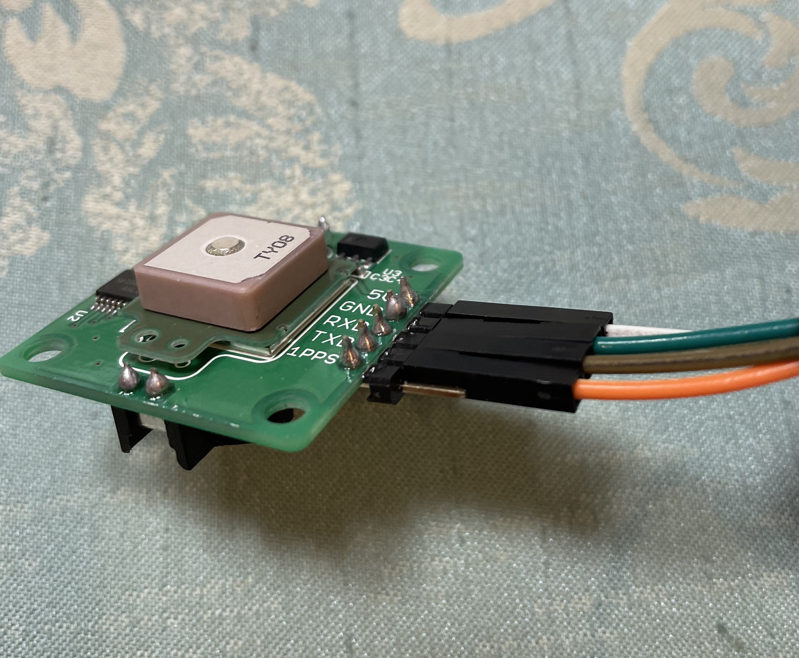
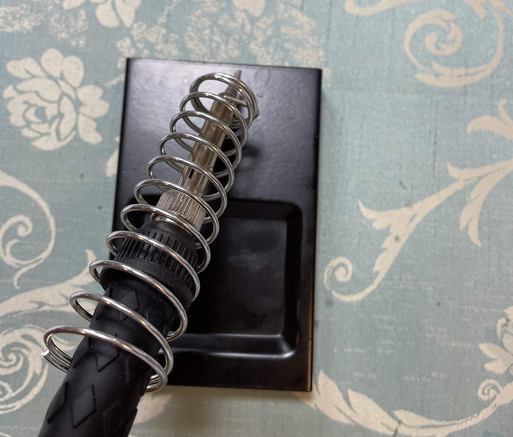
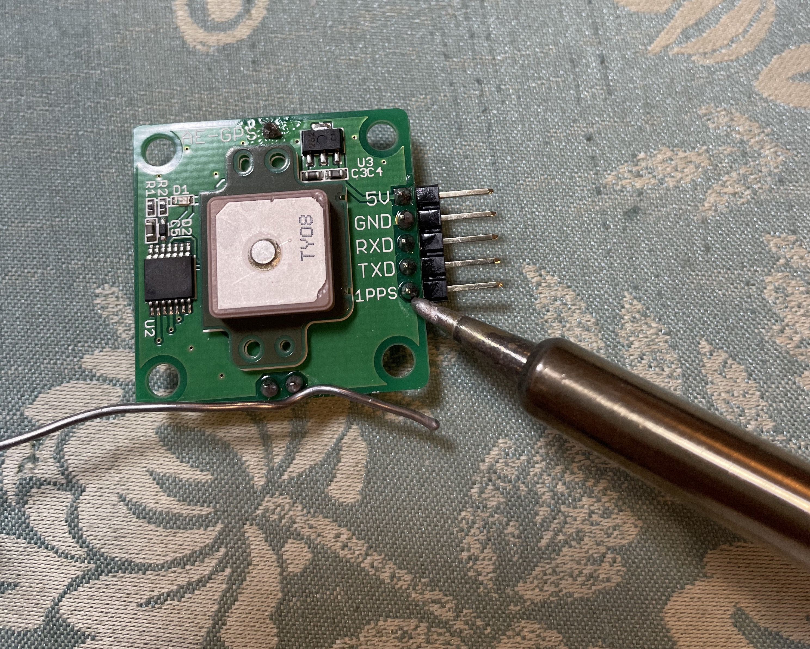
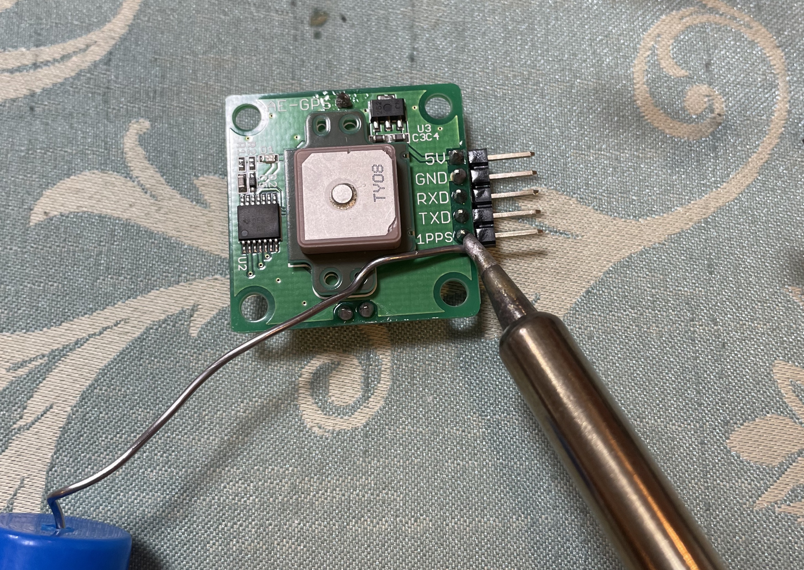
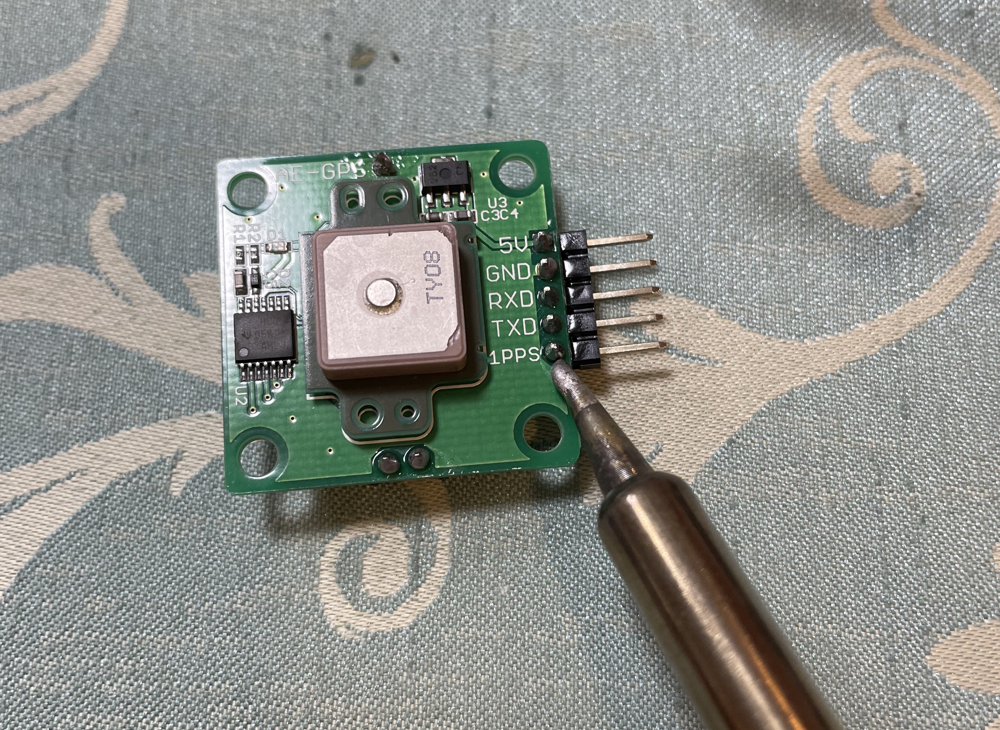
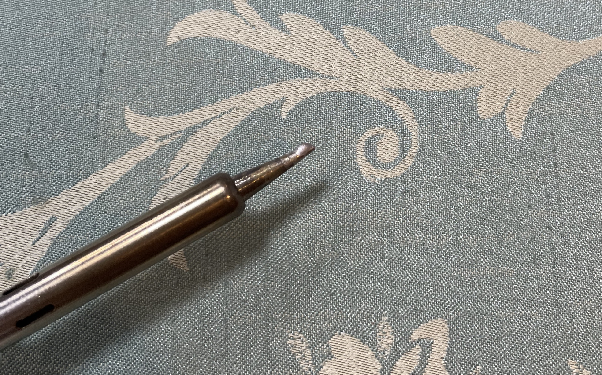
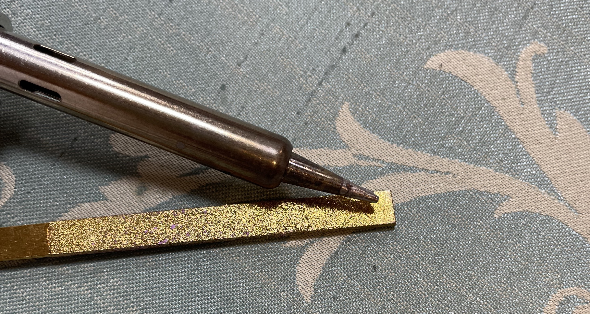
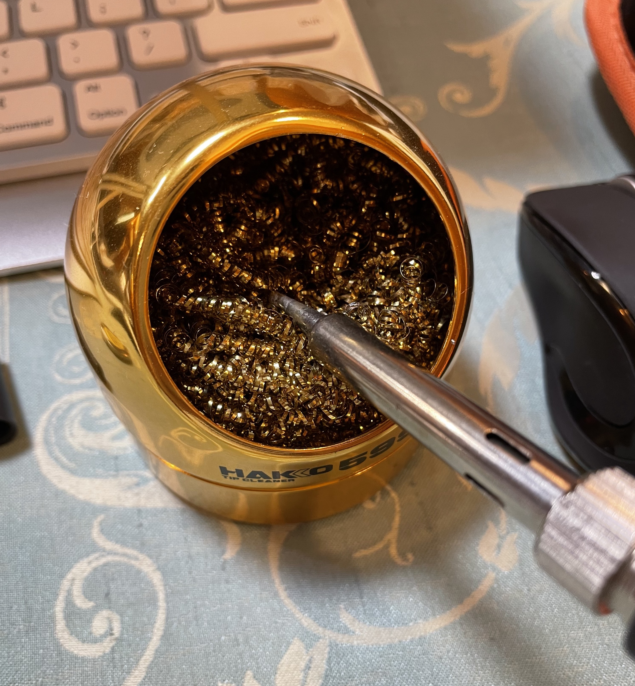
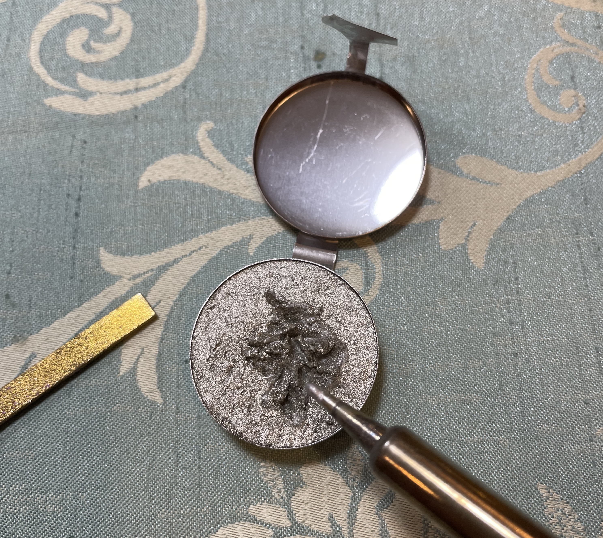
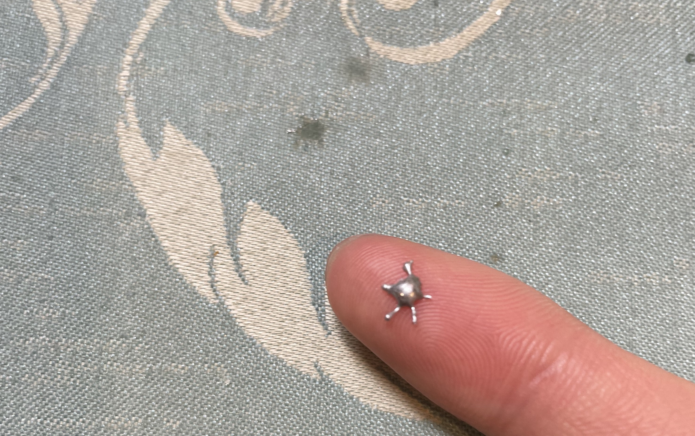

Hello!

・写真の半田付けされている部分の手前三つのような、富士山型になるのがベストと言われている。
※奥の二つはハンダの量が過多。
・半田付けセット
・ 手入れ用具1
・手入れ用具2
・手入れ用具3（やすり）
・ここだが、気づいた点あり

① コテ先を温める。
※コテ先は250℃ほど。

②ハンダが行き渡りやすいようにランドの部分を温める。
※サイトは4秒と書いてあるが、温めすぎるとピンの黒い部分が溶けてしまうので、1秒ほどで十分だとわかった。

③ハンダを溶かす。
※これは2秒ほどで良いと思う。

④最後に、ハンダを離してランドに行き渡らせる。
※ハンダが行き渡るのを待ってから話す。

⑤コテ先を冷ます前に、必ずハンダを先につけてからスイッチを切る。
※酸化防止の為。
半田付けを繰り返していたら、やがてコテ先が真っ黒になり半田付けがうまくいかない日が来ると思います。
私もこの壁にぶつかりました。
これは、コテ先が酸化してしまうことが原因です。
その場合の解決策が手入れです。

①黒い部分をやすりで優しく擦って取る。（電源オフ状態）

②これに、コテ先をつっこんでコテ先の表面を掃除。（Both is OK）

③最後に、これでコーティング（電源オン）をして→コテ先を整えて→ハンダを乗せて→終了。
どんどんやって慣れていくしかないと思うので、とにかくTry & Error!

ハンダを机に落としたら焦げます。
でも綺麗だったので、はんだアートと名付けました。
ぜひ皆さんも落としてみてください。
Fin.